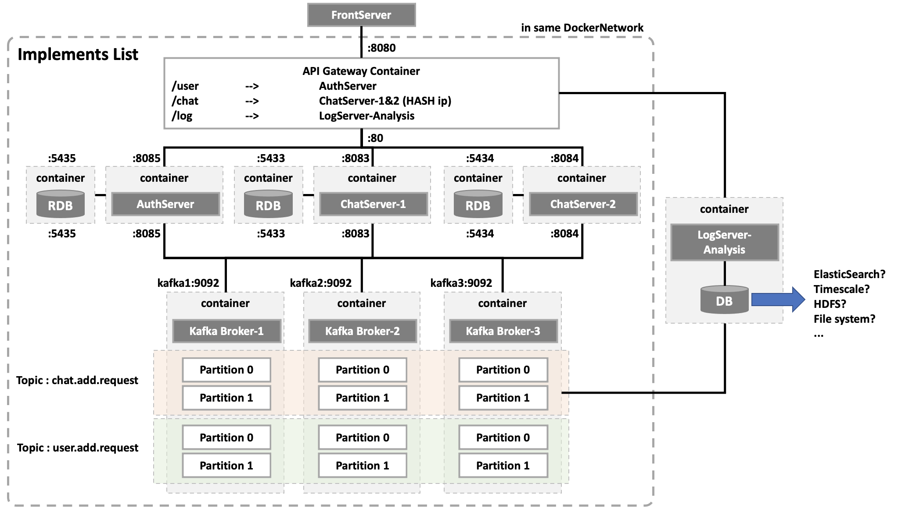
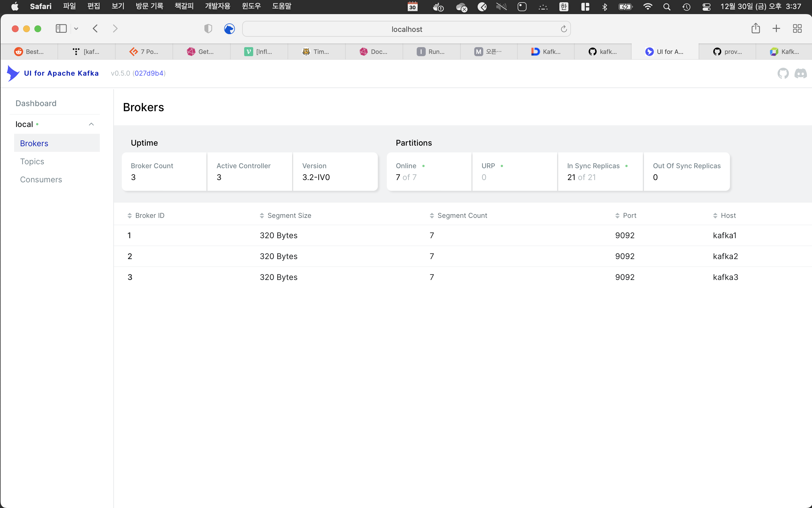
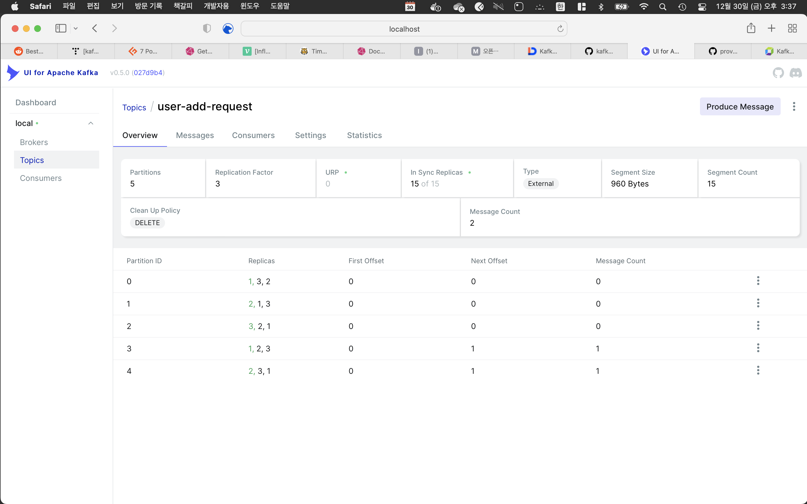

진행상황
Architecture
 현재 구현된 서비스를 docker compose를 통해 실행시키면 다음과 같이 컨테이너들이 생긴다.
Kafka와 Chat Server, Auth Server, DB들 모두 외부접속 가능하도록 노출 port를 도커 내부 포트랑 같게 설정했다.
구현 완료
- API GATEWAY
- 채팅서버(/chat)에 접속 시, ip_hash로 특정 서버로만 들어가도록 구현
- 인증서버(/user)에 접속할 때 uri 맨 뒤
/가 붙어야만 접속되었었다. 그래서rewrite {regex}로 맨뒤에 자동으로/를 붙여주도록 설정
- Auth Server
- 인증서버를 따로 구현함으로써 다른 곳에서도 편하게 이용할 수 있도록 구현
- Chat Server
- 채팅서버를 수동으로 2대 구축
추후 K8S의 auto-scaling으로 구현할 예정
- 채팅서버를 수동으로 2대 구축
- Kafka Broker
- 토픽은 두 개로 올렸으며, 각각 broker 3대 및 2개의 파티션에 걸쳐 백업되도록 운용
파티션은 200개가 적당하다고 한다. 지금 당장은 2개의 파티션으로 운용.
- 토픽은 두 개로 올렸으며, 각각 broker 3대 및 2개의 파티션에 걸쳐 백업되도록 운용
구현 미완료
- Front Server
- API GATEWAY에 비동기+논 블로킹 webClient로 요청 전송 예정
- Log Server
- DB선정에 있어 고민이 있다. 여러가지 비교해봤을 때, 1차적으로 Elastic Search을 선택하였다. 시계열 데이터에 맞는 DB는?
- Elastic Search = RESTful api기반으로 여러 곳에서 활용 가능하며, 역색인을 지원하므로 비정형 doc 색인/검색에 탁월하다. 필자는 채팅을 관찰하며 특정 단어의 빈도수를 모니터링하려 하는데 이때 쓰기 딱 좋을듯. 또한 데이터 저장 시점에 해당 데이터를 색인하기에 실시간이 아닌점이 마음에 든다. Kafka를 쓰기때문에 실시간이 아닐 뿐더러, Logging에 실시간성이 필요없기때문에 알맞은 엔진이라고 생각된다.
- HDFS = 분산저장 아직 하지 않을것임
- File System = Transaction관리가 어려움
- Timescale = 기존 Postgres를 시계열로 확장시킨 DB. 그래서 익숙한 SQL문을 그대로 사용할 수 있다는 장점이 있다. 하지만 단점은 직접 모든 SQL문을 작성해야한다는 점이다(이유는 JPA에서 Timescale을 지원하지 않기 때문에 모든 Dialect를 작성해야함)
- InfluxDB = 가장 많이 사용하는 시계열 DB이자, JPA가 지원하는 시계열 DB. 참고자료. 필자가 원하는 채팅개수 및 신규가입자 수라는 시계열 데이터들을 대시보드로 별도로 쉽게 확인할 수 있다.
InfluxDB는 real-time querying에 좋다고 하는것 같은데, 우리는 카프카를 사용하기때문에 해당 장점을 활용하지 않는다.
- 만약 InfluxDB를 선택한다면, 시계열데이터는 다음과 같이 두 가지로 각각의 하이퍼테이블을 구성할 예정
- symbol = chatAdd, data = 채팅 입력 수
- symbol = userAdd, data = 신규가입자 수
- DB선정에 있어 고민이 있다. 여러가지 비교해봤을 때, 1차적으로 Elastic Search을 선택하였다. 시계열 데이터에 맞는 DB는?
- Orchestration saga
- 필자는 Kafka를 MSA의 백본망으로 사용한다. 따라서 saga의 패턴 중 중앙집권형인 Orchestration 패턴으로 모니터링을 중앙에서 할 것이다.
- 사용할 모니터링 툴 리스트
- 메세지 모니터링 UI for Kafka

 카프카 서버 연결 및 Consumer Group 확인/ 토픽 확인이 용이하다. 또한 실제 메세지 내용도 확인할 수 있어서 편리하다.
- Consumer 트래픽 모니터링 https://s262701-id.tistory.com/126
- Linkedin의 burrow
- lag정보 Elasticsearch 수집 데이터파이프라인
- ElasticSearch에 기록된 lag 정보 기반 Grafana lag 모니터링 대시보드 각각의 Kafka 모니터링 툴 비교
- 메세지 모니터링 UI for Kafka
완료된 설정
상세 코드는 https://github.com/ghkdqhrbals/spring-chatting-server에서 확인하능하다.
main branch에 존재
완료된 API GATEWAY(nginx.config)
1
2
3
4
5
6
7
8
9
10
11
12
13
14
15
16
17
18
19
20
21
22
23
24
25
26
27
28
29
30
31
32
33
34
35
36
37
38
39
40
41
42
43
44
45
46
47
48
49
50
51
52
53
54
55
user nginx;
worker_processes 1;
error_log /var/log/nginx/error.log warn;
pid /var/run/nginx.pid;
events {
worker_connections 1024;
}
http {
include /etc/nginx/mime.types;
default_type application/octet-stream;
upstream chat-server {
# IP 해쉬화 하여 특정 서버에 들어가도록 설정
# https://nginx.org/en/docs/http/ngx_http_upstream_module.html#ip_hash
ip_hash;
server chatting-server-1:8083;
server chatting-server-2:8084;
}
upstream auth-server {
server auth-server:8085;
}
server {
listen 80;
# 추후 server_name 변경예정
server_name localhost;
location / {
# 채팅서버 backend
location /chat {
proxy_pass http://chat-server;
proxy_redirect off;
proxy_set_header Host $host;
proxy_set_header X-Real-IP $remote_addr; # 클라이언트 요청 ip전송
proxy_set_header X-Forwarded-For $proxy_add_x_forwarded_for; # 클라이언트 요청 ip전송
}
# 인증서버 backend
location /user {
rewrite ^([^.]*[^/])$ $1/ permanent; # tailing slash with every url
proxy_pass http://auth-server;
proxy_redirect off;
proxy_set_header Host $host;
proxy_set_header X-Real-IP $remote_addr;
proxy_set_header X-Forwarded-For $proxy_add_x_forwarded_for;
}
}
}
log_format main '$remote_addr - $remote_user [$time_local] "$request" '
'$status $body_bytes_sent "$http_referer" '
'"$http_user_agent" "$http_x_forwarded_for"';
access_log /var/log/nginx/access.log main;
sendfile on;
keepalive_timeout 65;
include /etc/nginx/conf.d/*.conf;
}
완료된 Docker-compose.yml
Kafka 설정에 있어 https://www.confluent.io/blog/kafka-client-cannot-connect-to-broker-on-aws-on-docker-etc/ 문서가 많은 도움이 되었다.
1
2
3
4
5
6
7
8
9
10
11
12
13
14
15
16
17
18
19
20
21
22
23
24
25
26
27
28
29
30
31
32
33
34
35
36
37
38
39
40
41
42
43
44
45
46
47
48
49
50
51
52
53
54
55
56
57
58
59
60
61
62
63
64
65
66
67
68
69
70
71
72
73
74
75
76
77
78
79
80
81
82
83
84
85
86
87
88
89
90
91
92
93
94
95
96
97
98
99
100
101
102
103
104
105
106
107
108
109
110
111
112
113
114
115
116
117
118
119
120
121
122
123
124
125
126
127
128
129
130
131
132
133
134
135
136
137
138
139
140
141
142
143
144
145
146
147
148
149
150
151
152
153
154
155
156
version : '2'
services:
# -------- API GATEWAY --------
nginx:
restart: always
container_name: nginx
depends_on:
- chatting-server-1
- chatting-server-2
build:
context: ./nginx
dockerfile: Dockerfile
ports:
- "8080:80"
# -------- KAFKA --------
zookeeper:
image: confluentinc/cp-zookeeper:7.2.1
container_name: zookeeper
environment:
ZOOKEEPER_CLIENT_PORT: 2181
kafka1:
image: confluentinc/cp-kafka:7.2.1
container_name: kafka1
ports:
- "8097:8097"
depends_on:
- zookeeper
environment:
KAFKA_BROKER_ID: 1
KAFKA_ZOOKEEPER_CONNECT: zookeeper:2181
KAFKA_LISTENER_SECURITY_PROTOCOL_MAP: EXTERNAL:PLAINTEXT,INTERNAL:PLAINTEXT
KAFKA_ADVERTISED_LISTENERS: EXTERNAL://localhost:8097,INTERNAL://kafka1:9092
KAFKA_INTER_BROKER_LISTENER_NAME: INTERNAL
kafka2:
image: confluentinc/cp-kafka:7.2.1
container_name: kafka2
ports:
- "8098:8098"
depends_on:
- zookeeper
environment:
KAFKA_BROKER_ID: 2
KAFKA_ZOOKEEPER_CONNECT: zookeeper:2181
KAFKA_LISTENER_SECURITY_PROTOCOL_MAP: EXTERNAL:PLAINTEXT,INTERNAL:PLAINTEXT
KAFKA_ADVERTISED_LISTENERS: EXTERNAL://localhost:8098,INTERNAL://kafka2:9092
KAFKA_INTER_BROKER_LISTENER_NAME: INTERNAL
kafka3:
image: confluentinc/cp-kafka:7.2.1
container_name: kafka3
ports:
- "8099:8099"
depends_on:
- zookeeper
environment:
KAFKA_BROKER_ID: 3
KAFKA_ZOOKEEPER_CONNECT: zookeeper:2181
KAFKA_ADVERTISED_LISTENERS: EXTERNAL://localhost:8099,INTERNAL://kafka3:9092
KAFKA_LISTENER_SECURITY_PROTOCOL_MAP: EXTERNAL:PLAINTEXT,INTERNAL:PLAINTEXT
KAFKA_INTER_BROKER_LISTENER_NAME: INTERNAL
# -------- Chatting Server --------
chatting-db-1:
container_name: chatting-db-1
image: postgres:12-alpine
environment:
- POSTGRES_PASSWORD=password
- POSTGRES_USER=postgres
- POSTGRES_DB=chat
expose:
- "5433" # Publishes 5433 to other containers but NOT to host machine
ports:
- "5433:5433"
volumes:
- ./backups:/home/backups
command: -p 5433
chatting-server-1:
container_name: chatting-server-1
build: ./spring-chatting-backend-server
ports:
- "8083:8083"
environment:
- SPRING_DATASOURCE_URL=jdbc:postgresql://chatting-db-1:5433/chat
- SPRING_DATASOURCE_USERNAME=postgres
- SPRING_DATASOURCE_PASSWORD=password
- SPRING_JPA_HIBERNATE_DDL_AUTO=update
- SERVER_PORT=8083
- KAFKA_BOOTSTRAP=kafka1:9092,kafka2:9092,kafka3:9092 # 내부포트
depends_on:
- kafka1
- kafka2
- kafka3
- chatting-db-1
restart: always
chatting-db-2:
container_name: chatting-db-2
image: postgres:12-alpine
environment:
- POSTGRES_PASSWORD=password
- POSTGRES_USER=postgres
- POSTGRES_DB=chat
expose:
- "5434" # Publishes 5433 to other containers but NOT to host machine
ports:
- "5434:5434"
volumes:
- ./backups:/home/backups
command: -p 5434
chatting-server-2:
container_name: chatting-server-2
build: ./spring-chatting-backend-server
ports:
- "8084:8084"
environment:
- SPRING_DATASOURCE_URL=jdbc:postgresql://chatting-db-2:5434/chat
- SPRING_DATASOURCE_USERNAME=postgres
- SPRING_DATASOURCE_PASSWORD=password
- SPRING_JPA_HIBERNATE_DDL_AUTO=update
- SERVER_PORT=8084
- KAFKA_BOOTSTRAP=kafka1:9092,kafka2:9092,kafka3:9092 # 내부포트
depends_on:
- kafka1
- kafka2
- kafka3
- chatting-db-2
restart: always
# -------- Authentication Server --------
auth-db:
container_name: auth-db
image: postgres:12-alpine
environment:
- POSTGRES_PASSWORD=password
- POSTGRES_USER=postgres
- POSTGRES_DB=auth
expose:
- "5435" # Publishes 5433 to other containers but NOT to host machine
ports:
- "5435:5435"
volumes:
- ./backups:/home/backups
command: -p 5435
auth-server:
container_name: auth-server
build: ./spring-auth-backend-server
ports:
- "8085:8085"
environment:
- SERVER_PORT=8085
- SPRING_DATASOURCE_URL=jdbc:postgresql://auth-db:5435/auth
- SPRING_DATASOURCE_USERNAME=postgres
- SPRING_DATASOURCE_PASSWORD=password
- SPRING_JPA_HIBERNATE_DDL_AUTO=update
depends_on:
- auth-db
restart: always